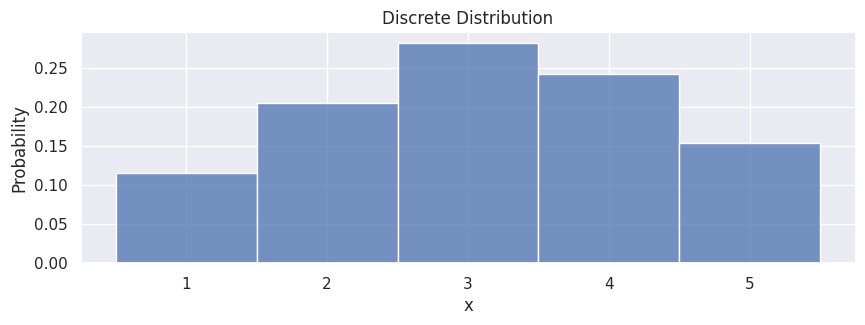
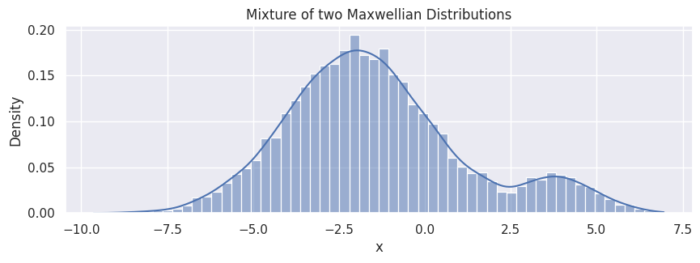
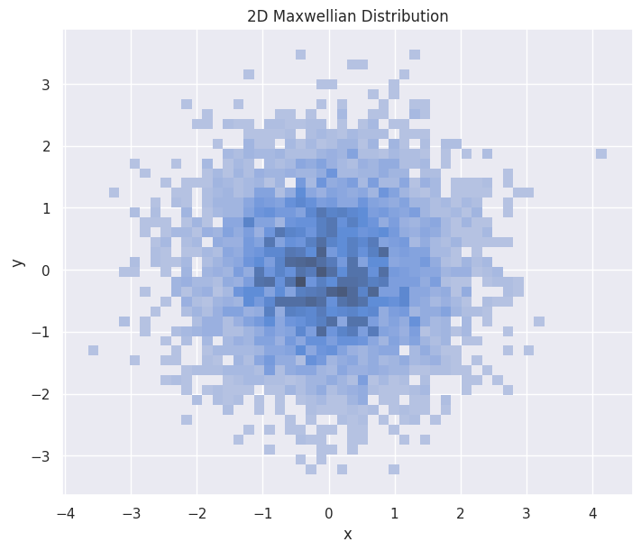
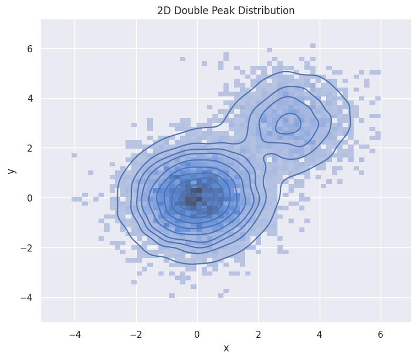
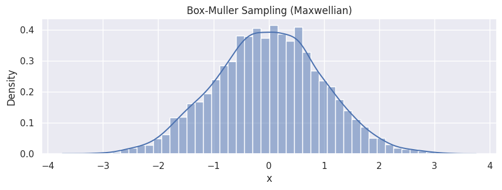
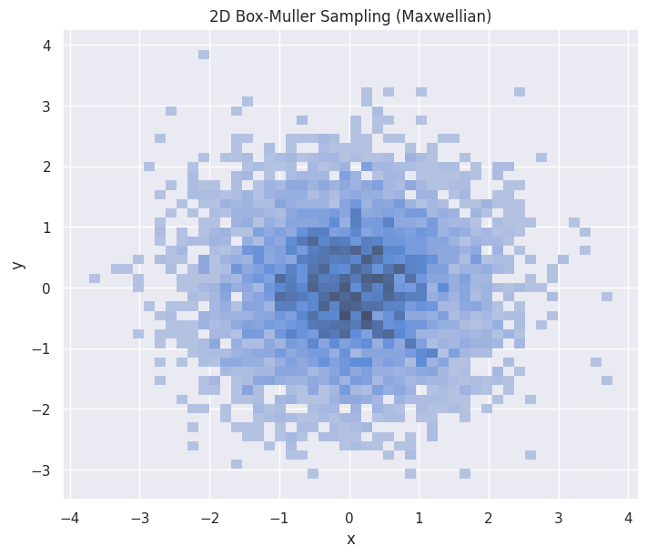
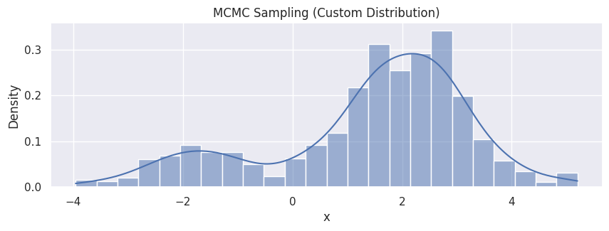
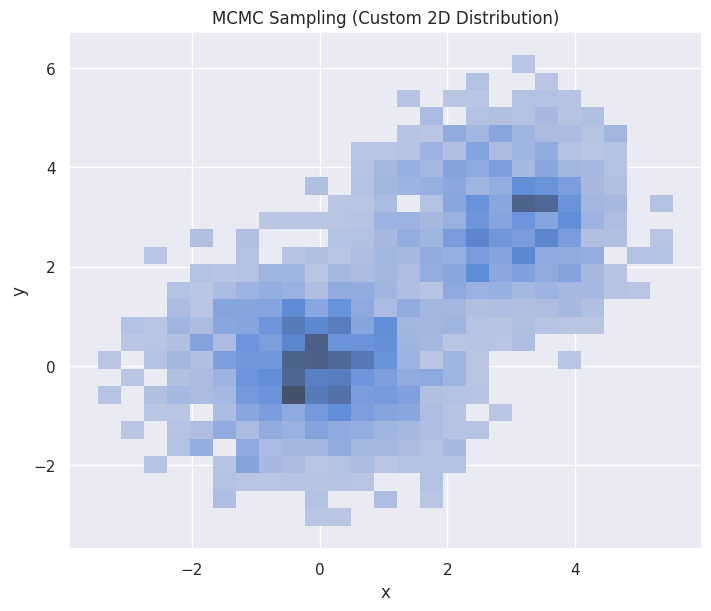
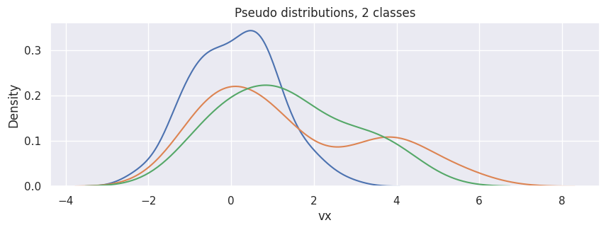
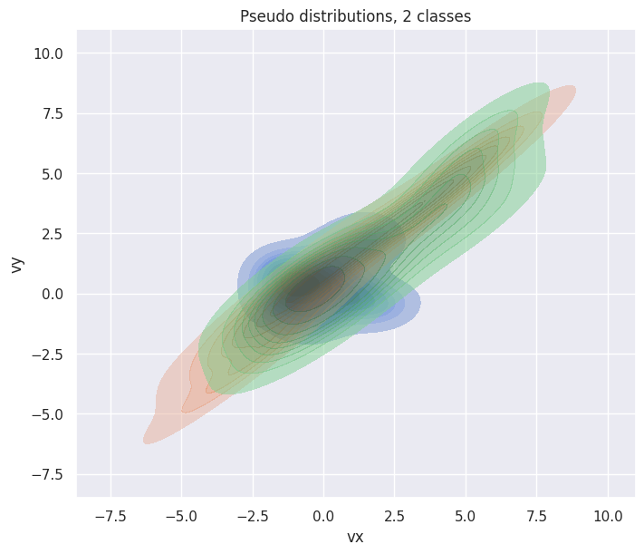

Generating Distribution Functions#
NumPy provides efficient and flexible tools for random sampling. Earlier versions of numpy (< v1.17) uses numpy.random methods directly (e.g. numpy.random.normal); users of newer versions are recommended to use the Generator instance with default_rng and call the various methods on it to obtain samples from different distributions.
import numpy as np
import pandas as pd
import matplotlib.pyplot as plt
import seaborn as sns
sns.set_theme(rc={'figure.figsize':(10, 3)})
# For reproducibility
seed = 1234
rng = np.random.default_rng(seed)
One-dimensional Distributions#
Discrete distribution#
In the simplest case, if we have a discrete distribution (a set of values with associated probabilities), we can sample points like the following:
population = [1, 2, 3, 4, 5]
probabilities = [0.1, 0.2, 0.3, 0.25, 0.15]
samples = rng.choice(population, size=500, p=probabilities)
df_discrete = pd.DataFrame(samples, columns=["x"])
hp = sns.histplot(df_discrete,
x="x",
stat="probability",
discrete=True
)
hp.set(title="Discrete Distribution");

Summation of two Maxwellian distributions#
mean1, std1 = -2, 2
mean2, std2 = 4, 1
n1 = 9000
n2 = 1000
samples1 = rng.normal(mean1, std1, size=n1)
samples2 = rng.normal(mean2, std2, size=n2)
samples = np.concatenate([samples1, samples2])
np.random.shuffle(samples) # Shuffle to mix the samples randomly
df_double_peak = pd.DataFrame(samples, columns=["x"])
hp = sns.histplot(df_double_peak,
x="x",
stat="density",
kde=True
)
hp.set(title="Mixture of two Maxwellian Distributions");

Two-dimensional Distributions#
2D Maxwellian#
mean = [0, 0]
cov = [[1, 0], [0, 1]]
n1 = 5000
samples = rng.multivariate_normal(mean, cov, size=n1)
df_double_peak_2d = pd.DataFrame(samples, columns=["x", "y"])
fig, ax = plt.subplots(figsize=(7, 6), layout="constrained")
hp = sns.histplot(df_double_peak_2d,
x="x", y="y",
stat="density",
ax=ax,
)
hp.set(title="2D Maxwellian Distribution")
plt.show()

2D double-peak Maxwellian#
Here is an analytical construction of a mixture of two Maxwellian distribution in 2D. Note that the kernel density estimation in high dimension is an expensive operation.
mean = [0, 0]
cov = [[1, 0], [0, 1]]
n1 = 8000
samples1 = rng.multivariate_normal(mean, cov, size=n1)
mean = [3, 3]
cov = [[1, 0], [0, 1]]
n2 = 2000
samples2 = rng.multivariate_normal(mean, cov, size=n2)
samples = np.concatenate((samples1, samples2))
df_double_peak_2d = pd.DataFrame(samples, columns=["x", "y"])
fig, ax = plt.subplots(figsize=(7, 6), layout="constrained")
hp = sns.histplot(df_double_peak_2d,
x="x", y="y",
stat="density",
ax=ax
)
hp.set(title="2D Double Peak Distribution")
sns.kdeplot(df_double_peak_2d, x="x", y="y")
plt.show()

Generating Pseudo-Data from VDFpy#
Sampling Methods#
We also provide methods for sampling from distributions directly.
Box-Muller Method#
The Box-Muller transform is a random number sampling method for generating pairs of independent, standard, normally distributed (zero expectation, unit variance) random numbers, given a source of uniformly distributed random numbers. We provide a function sample_box_muller to sample from Maxwellian distributions. This function supports 1D, 2D, and 3D sampling.
from vdfpy.generator import sample_box_muller
n_particles = 5000
bulk_velocity = 0.0
temperature = 1.0
# 1D example
samples_bm = sample_box_muller(n_particles, bulk_velocity, temperature, rng=rng)
df_bm = pd.DataFrame(samples_bm, columns=["x"])
hp = sns.histplot(df_bm, x="x", stat="density", kde=True)
hp.set(title="Box-Muller Sampling (Maxwellian)");

# 2D example
samples_bm_2d = sample_box_muller(n_particles, bulk_velocity, temperature, n_dims=2, rng=rng)
df_bm_2d = pd.DataFrame(samples_bm_2d, columns=["x", "y"])
fig, ax = plt.subplots(figsize=(7, 6), layout="constrained")
hp = sns.histplot(df_bm_2d,
x="x", y="y",
stat="density",
ax=ax
)
hp.set(title="2D Box-Muller Sampling (Maxwellian)")
plt.show()

Markov Chain Monte Carlo (MCMC) Method#
Markov Chain Monte Carlo (MCMC) methods comprise a class of algorithms for sampling from a probability distribution. By constructing a Markov chain that has the desired distribution as its equilibrium distribution, one can obtain a sample of the desired distribution by observing the chain after a number of steps. We provide sample_mcmc for sampling from a customized distribution. This function also supports 1D, 2D, and 3D sampling.
from vdfpy.generator import sample_mcmc
def custom_log_prob(x):
# A simple mixture of two Gaussians as a custom distribution
# p(x) ~ 0.3 * N(-2, 1) + 0.7 * N(2, 1)
return np.logaddexp(
np.log(0.3) - 0.5 * (x + 2) ** 2, np.log(0.7) - 0.5 * (x - 2) ** 2
)
n_particles = 1000
initial_state = 0.0
samples_mcmc = sample_mcmc(
n_particles, custom_log_prob, initial_state, rng=rng, burn_in=500
)
df_mcmc = pd.DataFrame(samples_mcmc, columns=["x"])
hp = sns.histplot(df_mcmc, x="x", stat="density", kde=True)
hp.set(title="MCMC Sampling (Custom Distribution)");

# A mixture of two 2D Gaussians
# p(x) ~ 0.5 * N([0,0], I) + 0.5 * N([3,3], I)
mu1 = np.array([0.0, 0.0])
mu2 = np.array([3.0, 3.0])
def custom_log_prob_2d(x):
log_p1 = -0.5 * np.sum((x - mu1) ** 2)
log_p2 = -0.5 * np.sum((x - mu2) ** 2)
# log(0.5 * exp(log_p1) + 0.5 * exp(log_p2))
# = log(0.5) + logaddexp(log_p1, log_p2)
return np.log(0.5) + np.logaddexp(log_p1, log_p2)
n_particles = 4000
initial_state = np.array([0.0, 0.0])
samples_mcmc_2d = sample_mcmc(
n_particles, custom_log_prob_2d, initial_state, rng=rng, n_dims=2, burn_in=500
)
df_mcmc_2d = pd.DataFrame(samples_mcmc_2d, columns=["x", "y"])
fig, ax = plt.subplots(figsize=(7, 6), layout="constrained")
hp = sns.histplot(df_mcmc_2d, x="x", y="y", stat="density", ax=ax)
hp.set(title="MCMC Sampling (Custom 2D Distribution)")
plt.show()

Pseudo-Data with Labels for Clustering#
In VDFpy, we provide a utility function make_clusters for generating pseudo-data for testing the clustering algorithms.
1D#
For instance, to generate 3 samples (each contains 100 points) of one-dimensional VDFs from 2 clusters:
from vdfpy.generator import make_clusters
df = make_clusters(n_clusters=2, n_dims=1, n_points=100, n_samples=3)
df
| class | particle velocity | density | bulk velocity | temperature | |
|---|---|---|---|---|---|
| 0 | 1 | vx 0 -0.887424 1 0.762137 2 -1.2... | 97.0 | 0.088538 | 1.034424 |
| 1 | 2 | vx 0 0.784648 1 1.164206 2 0.4... | 79.0 | 1.418866 | 1.977728 |
| 2 | 2 | vx 0 0.888423 1 1.778676 2 -0.3... | 15.0 | 1.361416 | 1.487520 |
hp = sns.kdeplot(df["particle velocity"][0], x="vx")
[sns.kdeplot(d, x="vx") for d in df["particle velocity"][1:]]
hp.set(title="Pseudo distributions, 2 classes");

2D#
To generate 3 samples (each contains 30 points) of two-dimensional distributions from 2 classes:
df = make_clusters(n_clusters=2, n_dims=2, n_points=30, n_samples=3)
df
| class | particle velocity | density | bulk velocity | temperature | |
|---|---|---|---|---|---|
| 0 | 1 | vx vy 0 1.341490 2.508880 ... | 20.0 | vx -0.046592 vy 0.359415 dtype: float64 | 1.081555 |
| 1 | 2 | vx vy 0 0.585254 1.283042 1 ... | 6.0 | vx 0.646385 vy 1.188127 dtype: float64 | 2.570567 |
| 2 | 2 | vx vy 0 -0.242306 0.556250 ... | 18.0 | vx 1.487306 vy 1.443519 dtype: float64 | 2.403955 |
fig, ax = plt.subplots(figsize=(7, 6), layout="constrained")
hp = sns.kdeplot(df["particle velocity"][0], x="vx", y="vy", ax=ax, fill=True)
[
sns.kdeplot(d, x="vx", y="vy", ax=ax, fill=True, alpha=0.5)
for d in df["particle velocity"][1:]
]
hp.set(title="Pseudo distributions, 2 classes");

More detailed usages can be found in the documentation. Also note that kernel density estimation in high dimension (N > 1) is a very expensive operation; users are recommended to use histplot instead of kdeplot in general.